D0 · 一句话结论
- 建议立面语言建议（现代中式，而不是传统中式）：现代体量 + 浅色石材/铝板/玻璃为主材 + 一条深灰的水平檐口线做收头 + 竖向格栅与金属线条做细部 + 入口做一个抽象的“门廊/门框”做识别 + 院落放在总图里。不做马头墙、仿古坡瓦、砖雕牌楼这类写实符号。
- 事实这条路线基于用户反馈：“现在不流行做纯中式住宅，应该是从中式演绎到现代中式”。所以 E 部分已把东梓关、桃花源、雷宅、邱家坞移出，换成以现代体量为主的案例（春风金沙、锦粼鸣庐、凤庭苑、义乌凤起潮鸣等）。
- 推断文化依据仍来自本册 B 部分已核实的龙游材料（白粉墙/灰瓦/砖雕门楼/天井/石窟凿痕与倒斗/竹与皮纸/衢江），但只取“比例、线条、材料色、空间秩序”，不取“形制”——这与 E 部分已建成案例的做法一致（湖境云庐的披檐、春风金沙的挑板檐口、锦粼鸣庐的缓坡大出挑、凤庭苑的抽象挑檐线条）。
- 未知不是设计方案：层数、材料价、计容规则（出挑/飘檐/阳台是否计容）都要到方案阶段与规划条件、成本测算一起落实。示意图 D-S1~S3 是我画的构成示意，不是效果图。
D1 · 文化原型 → 立面要素（现代转译）
| 龙游原型（B 部分已核实） | 可见证据 | 转译成现代立面的要素 | 标签 |
|---|---|---|---|
| 石窟凿痕 / 倒斗 / 鱼尾柱 | B3：洞壁平行凿痕、倒斗形洞顶（Commons 摄影） | ① 线条肌理：浅色石材/铝板做水平或竖向细线条（真石漆拉毛、石材划线、单元板分缝）；② 倒斗的“收分”→ 檐口、入口雨篷、屋顶退台的斗形收分（抽象成斜切面）；③ 鱼尾柱 → 入口处一根粗壮的独立柱 | 建议 |
| 白粉墙 + 灰瓦 + 高墙小窗 | B4：民居苑白墙与门楼、白色山墙 | 不照搬白墙灰瓦，取其色彩关系：主色米白/暖灰浅色石材与涂料，檐线与窗套用深灰金属；墙面少线脚，做干净的大面 | 建议 |
| 砖雕/石雕门楼 | B4/B2：民居苑砖雕门楼、湖镇砖雕门楼 | 每个组团/单元入口做一个抽象门廊/门框：深灰金属挑檐 + 石材门框 + 木色格栅（参考锦粼鸣庐、凤庭苑入口）；砖雕纹样仅在雕塑/景墙里做抽象化 | 建议 |
| 天井 + 木雕梁架 | B4：民居苑天井、木雕梁架 | 楼栋间做院落化的架空花园/下沉水院（总图层面）；阳台深度加大，吊顶用木色铝/木纹转印，呼应梁架 | 建议 |
| 竹 | B6：中国竹子之乡；徐伯珍笋壳书 | 竹色（竹青）只做小面积点缀；竖向细格栅（木色铝）做阳台外侧遮阳与空调百叶 | 建议 |
| 皮纸 | B6：龙游皮纸（国家级非遗） | 外墙用米白/暖灰；局部用磨砂/乳白玻璃与半透格栅，做“纸感”的透光 | 建议 |
| 衢江 / 水 | B5 | 色彩上取衢江灰蓝做玻璃、铝板次要色；底层/架空层与水院的立面倒影 | 建议 |
| 商帮：亦商亦儒 | B2 | 入口序列要“有仪式感而不炫耀”：门廊 + 前庭 + 落客，不搞大体量欧式柱廊 | 建议 |


D2 · 分楼型策略表（洋房 / 小高层 / 叠墅）
未知层数是我的常规假设：洋房约 5–6F、小高层约 12–18F、叠墅约 3–4F；限高 60m（S4），实际层数以规划为准。
建议近两年 gad/GOA 住宅（层数不设限；见 E7 招商玺、E8 臻颐府、E9 云启凤华·边界、E10 翡云悦府、E11 国宾风华、E12 江畔雲墅、E13 GOA 4 例·仅文字）：①顶部用“深色大出挑檐”统一收头；②横向通长阳台带 + 竖向细杆件；③入口一处大雨篷；④圆角/曲线只放在基座与转角；⑤隐藏落水管；⑥一个“框盒/横线”语言贯穿塔楼与底盘（E10）；⑦横线 + 收分竖线、270° 转角、错落塔冠（E11）；⑧顶部单一暖色金属冠 + 入口低长雨篷（E12）。它们的价格带都远高于本案，只借逻辑，成本提示见各案例的“要小心”。
| 要素 | 洋房（低密主力） | 小高层 | 叠墅/叠拼 |
|---|---|---|---|
| 材料 | 浅色石材/仿石陶板 + 玻璃栏板阳台 + 木色铝吊顶；金属收边（参考锦粼鸣庐：白/灰 + 金属收边） | 浅色涂料/GRC + 玻璃 + 金属层间线条（参考春风金沙、义乌凤起潮鸣的单元板做法）；基座 2 层石材 | 浅色石材 + 木色格栅；每层披檐用深灰金属；院墙用石材/浅色涂料 |
| 色彩 | 米白 + 暖灰；点缀赭黄（石窟） | 米白 + 浅灰；顶部深灰；银/香槟铝板点缀 | 米白 + 木色 + 深灰；竹青放在景观里 |
| 檐口 | 深挑檐 600mm 以上的水平金属披檐（参考湖境云庐 600mm 披檐、锦粼鸣庐的缓坡大出挑） | 三段式：基座出挑小雨篷、标准层不出挑、冠部出深檐线（参考凤庭苑“三段式 + 挑檐线条”） | 每层独立披檐，端部收薄（参考礼贤的披檐、锦粼鸣庐排屋） |
| 入口门廊 | 每单元一个小门廊：深灰挑檐 + 石材门框 + 木格栅（参考锦粼鸣庐入户） | 架空入口门厅 + 一个大门廊，兼做楼栋识别（参考凤庭苑主入口） | 院门框（院墙开门洞，抽象为矩形框，不做月洞/牌楼） |
| 阳台栏板 | 玻璃栏板 + 木色吊顶 + 深色扶手；侧面做半开放格栅 | 凸阳台改为内凹阳台，栏板用实墙 + 局部玻璃，减少外立面碎线条 | 栏板做竖向木格栅，首层院内可做简洁的金属/石材漏窗 |
| 肌理 | 基座水平条纹石材/拉毛（对应石窟凿痕，抽象） | 竖向细线条 + 单元板分缝 | 局部粗糙石材做院墙/基座 |
| 成本提示 | 披檐与格栅是主要增量；做模块化（参考湖境云庐 100×45mm 六边形单元 5–6 种模块）降成本 | 外墙面积大，涂料/GRC + 少量金属线条优于满铺石材；幕墙类做法成本高（义乌凤起潮鸣页面称大面玻璃幕墙型材约为普通门窗 1.5 倍，自述） | 用量小，可以集中投入 |
构成示意图（自绘，示意）
建议示意图仅表达构成关系，颜色/比例为概念性；不代表层高、开间或任何实际数据。
D3 · 六个关键细部（对照本册已有图片）
① 檐口：深挑 + 水平收头
事实龙游民居靠“挑檐 + 牛腿”遮雨；现代住宅可抽象为水平金属披檐 / 缓坡大出挑。湖境云庐用 600mm 金属披檐（抽象自檐柱与额枋，S21）；锦粼鸣庐排屋用缓坡屋顶大出挑“减少厚重感”（S27）。建议本案可按此尺度做洋房阳台上沿；披檐是否计入建筑面积需向规划确认。

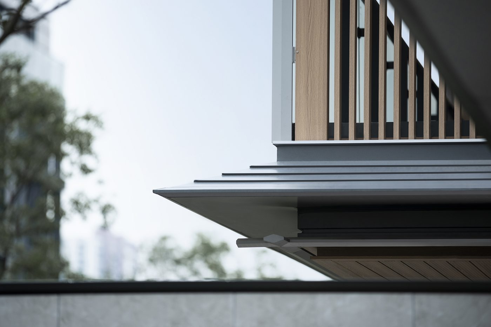
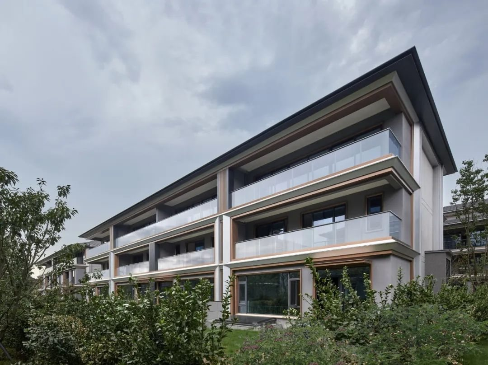
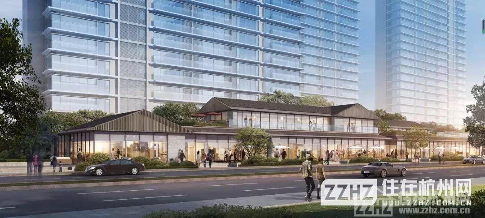
② 入口门廊（抽象门楼）
事实本地砖雕门楼是原型；现代做法是把门楼抽象为横向挑檐 + 深色柱/框 + 对称或轴线入口：凤庭苑主入口以对称布置营造“东方礼序”（S28），锦粼鸣庐入口用多重院落层层递进（S27）。建议建议只在每个单元/组团入口做，材料用深灰金属、石材、木色格栅，避免大面砖雕的成本和造假感。

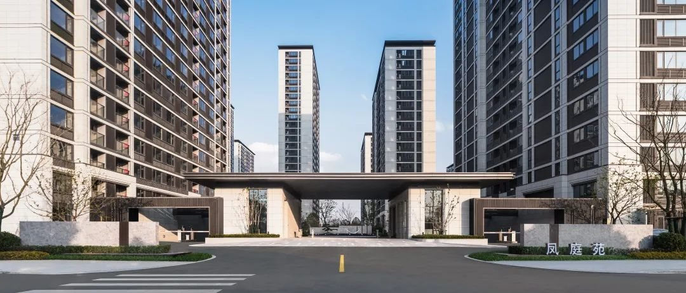
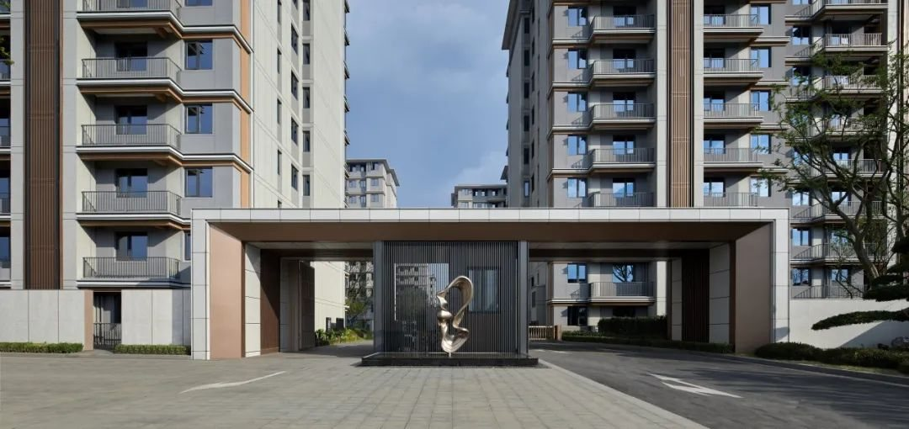
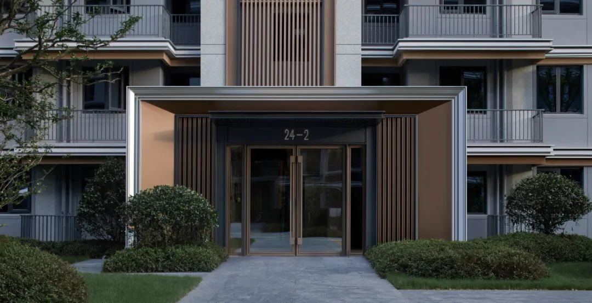
③ 阳台栏板
事实湖境云庐把阳台作为“体验中枢”：东西侧用格栅形成半开放屏障，阳台上界面木色吊顶，色彩为银灰铝材 + 橡木纹转印的浅木色（S21）。建议龙游版本：栏板用玻璃 + 竖向木色格栅，吊顶木色，呼应梁架与竹。
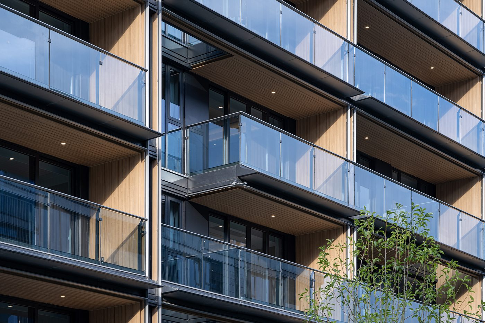
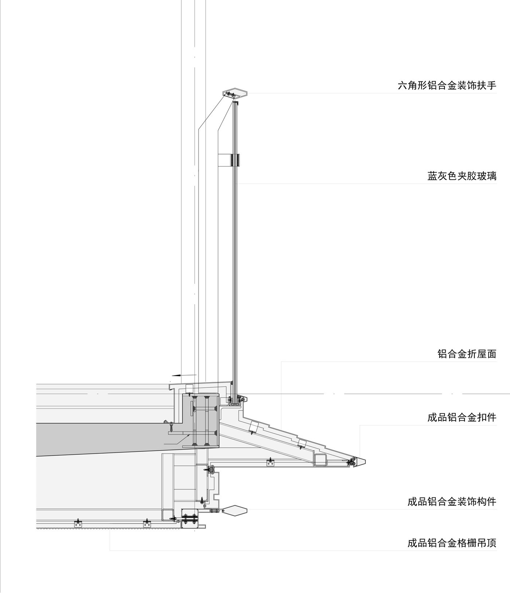
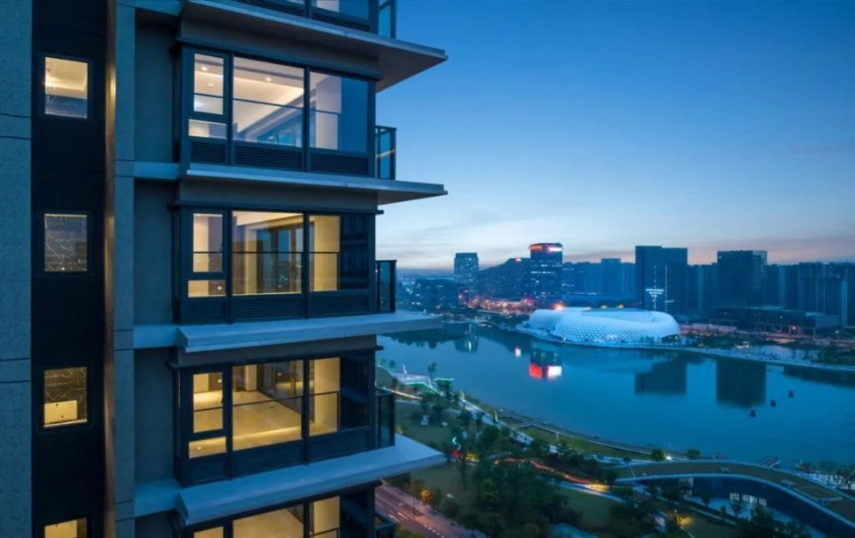
推断补充：臻颐府用通长横向阳台 + 玻璃栏板 + 竖向金属杆件（gad 自述窗墙比超 80%），招商玺（E7）阳台并入“幕墙窗系统”；二者都是豪宅配置，本案阳台只取“横向带 + 玻璃栏板”。
④ 肌理与线条：石窟凿痕 → 斜切线条 / 层间线条
事实石窟洞壁是平行的凿痕。锦粼鸣庐通过斜切手法和材质划分把大面积墙面转化为细长线条，选用银白、金、灰三种铝板（S27，设计方自述）；义乌凤起潮鸣用工厂定制单元板做渐变异形的层间线条（S29，页面自述）。建议转译为龙游：基座用水平石材/拉毛，塔楼用竖向细线条或金属层间线，不做仿古纹样。

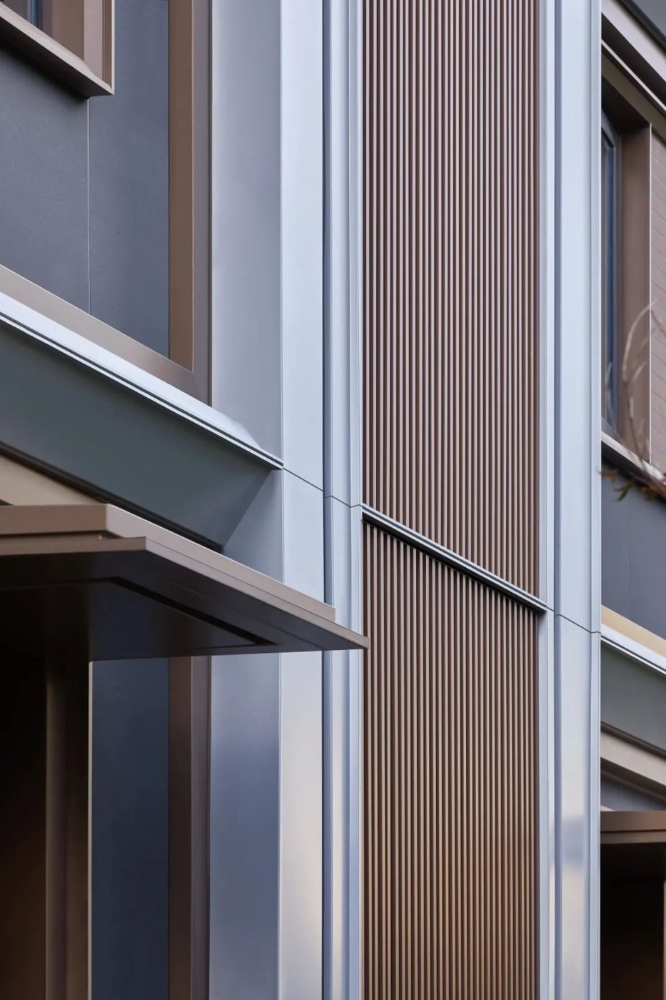
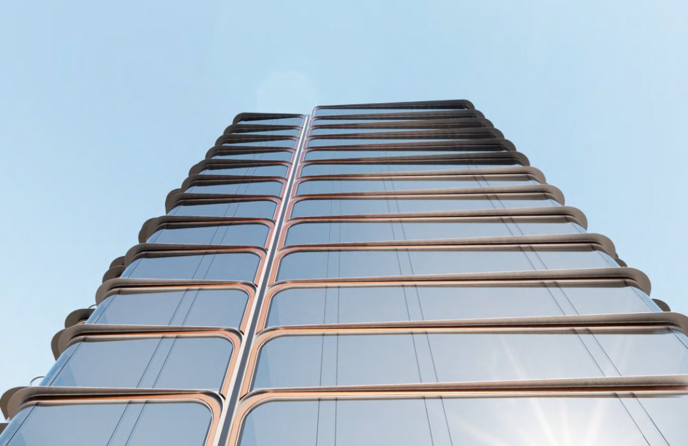
⑤ 竹/纸 → 竖向格栅与半透细部
建议龙游的竹与皮纸可以转成半透光的竖向格栅/磨砂玻璃，用在楼梯间、阳台外侧和入口廊。锦粼鸣庐入户处的木色竖向格栅、凤庭苑立面细部的金属格栅，都是现代住宅里的实际做法。未知格栅的防腐、清洁与坠落安全要在施工图阶段核。
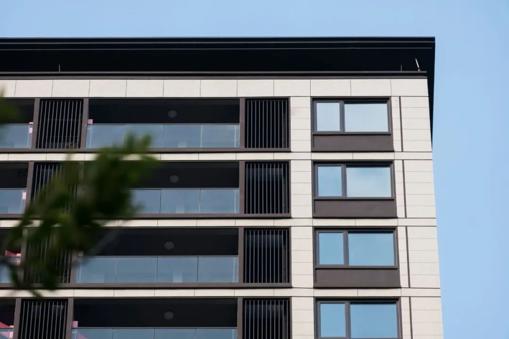
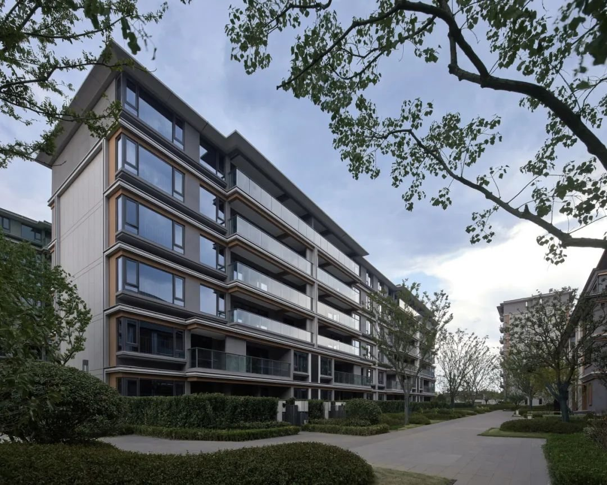
⑥ 抽象坡顶：会所 / 商业街 / 连廊
事实本地白色山墙与坡顶是原型。现代案例的做法是：只在低层的会所、商业街、门廊上用抽象的坡顶，高层与主体保持平屋面与简洁线条——春风金沙用坡顶会所与商业街、凤庭苑用裙房坡屋顶与会所。建议龙游可以在会所、售楼处、入口连廊使用，成本最低、识别度最高。

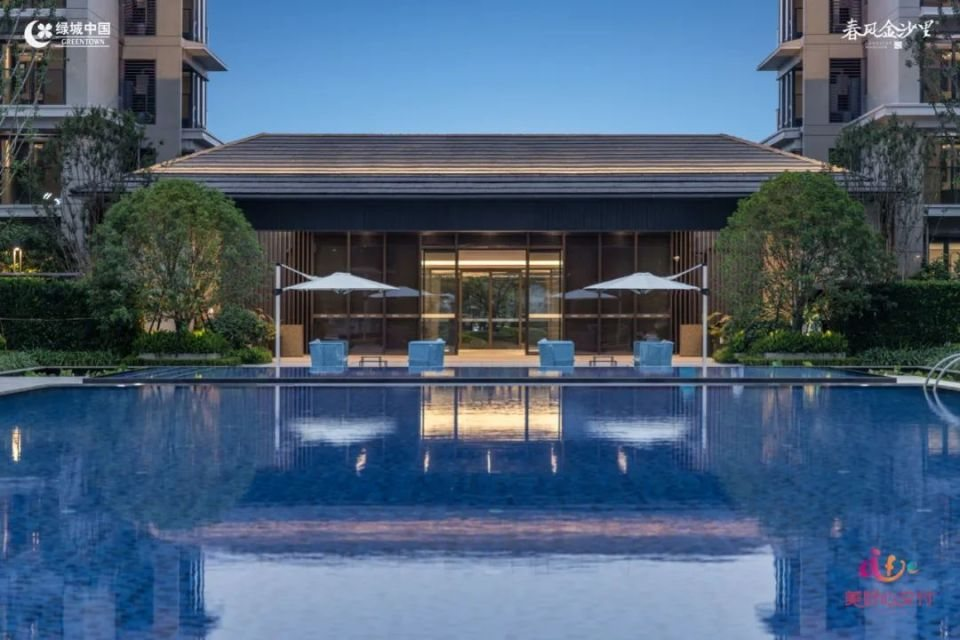
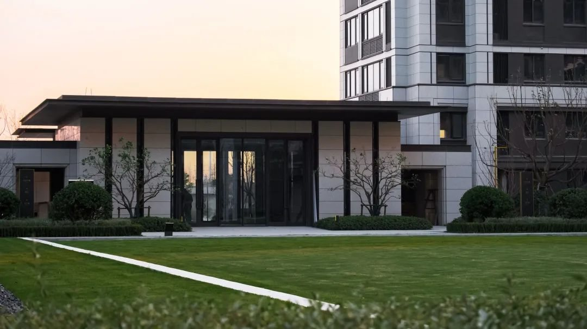
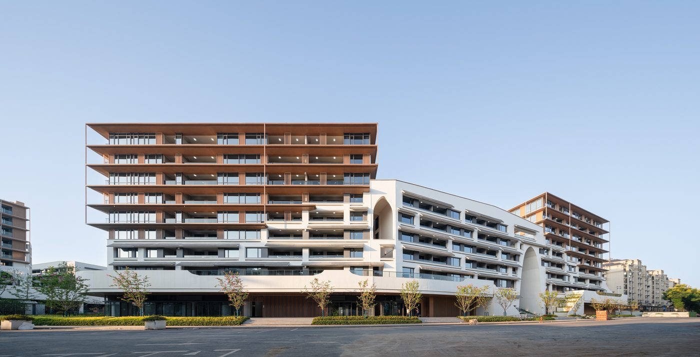
D4 · 与竞品的差异与落地风险
- 推断竞品（如江荷明月洋房）立面是通用的“水平线脚 + 大玻璃阳台”（C1-3）。本案如果只做同样的东西，文化叙事无法落地。差异化来自：入口门廊、檐口线、线条肌理、色彩体系，四件事。
- 建议成本：披檐、格栅、石材基座都是增量。本案地价低（楼面价 4,054）、预期价格带 12,000–15,000（A7，含假设），建议集中预算在入口、基座、阳台这三处“人眼高度”的位置，其余大面用涂料。
- 未知规范：出挑构件是否计容、消防/幕墙构造、防坠与扶手高度、外保温粘结——这些是实施条件，均需方案阶段对照龙游规划与施工图审查口径核实，本页不下结论。
- 推断对照近两年 gad/GOA 住宅：招商玺/臻颐府/翡云悦府/国宾风华/江畔雲墅说明不论层数，现代住宅普遍用“公建化立面 + 顶部收头 + 入口大雨篷”，但价格带 4–10.7 万/㎡（国宾风华、江畔雲墅未取到价格），与 1.2–1.5 万/㎡ 的本案不可比；本案取其逻辑即可。 推断对岸竞品的做法（C6 江堤春晓，只有沙盘和开发商文案，无效果图）：高层用格栅/铝板/大玻璃 + 冠顶，把“中式”集中给低层合院与一座大屋顶门厅。这比江荷明月的通用线脚更有辨识度，但它依赖 1.2 的低容积率和大面积合院；本案 FAR 可到 1.6，更现实的是只保留“一处大屋顶/一条入口轴线”，其余按 D2 的分楼型策略做。
- 推断风险：“现代中式”做不好就是符号堆砌，或者变成普通的现代立面；锦粼鸣庐设计方自称“纯现代宋式”，但可见的立面其实是现代做法（缓坡深出挑 + 铝板线条），借鉴时只取后者。传统形制的案例（如桃花源、东梓关）已按用户意见移出，不再作为立面依据。